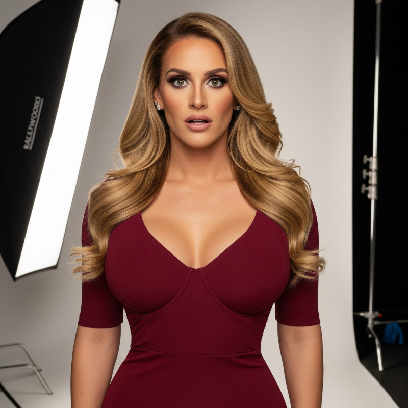

Five days on hormones and my body was already betraying me in ways that made no sense. A headache throbbed behind my eyes while something tender pressed against the padded bra with each breath. I knew it wasn't actually the hormones-they wouldn't affect me so quickly. Dr. Martinez had warned me about psychosomatic effects. I tried to tell myself it was all in my mind, but that didn't seem to help.
The emotional ambushes were getting worse too, probably aggravated by exhaustion and the general stress of my demotion. What had been fatigue-induced tears over commercials felt different now-rawer, less controllable. My brain felt foggy more and more frequently, causing me to make silly errors or forget the words I needed in the moment.
I'd cried yesterday over a comma in a press release.
Actual tears over a misplaced comma that wouldn't have registered six months ago. But now, five days since my first shot, I was falling apart over nothing. It had to be the campaign pressure, the relentless schedule, three months of Casey's starvation diet finally catching up with me. The effects were coming on faster than I'd expected, but maybe hormone therapy just hit different when you were already running on political adrenaline and sleep deprivation.
Casey found me staring at my reflection in the bathroom mirror, trying to understand what was different about my face.
"We need to talk," she said, and from her tone I knew it was bad.
She led me to what used to be my conference room, where footage from last week's briefings played silently on the main monitor. On screen, I watched myself competently field questions, pivoting from education funding to healthcare access without missing a beat. But before Casey could even say anything, I knew it-something was off. The lighting made my makeup look heavy, theatrical. The padded bra created strange lines under my blazer. While it had been weeks since anyone had clocked me in person, the camera saw straight through my careful disguise. Television was unforgiving.
"The content is perfect," Casey said carefully. "But..."
"But it looks like amateur hour." Beau's voice from the doorway made us both turn. He entered without invitation. "I've been reviewing the footage. You sound competent, Yvonne, but you look like you're playing dress-up."
He wasn't wrong. Despite everything-the diet, the coaching, the daily performance-the camera was cutting through my careful construction like a laser.
The governor turned to Casey. "What's our solution here?"
"I've been researching image consultants," Casey said, pulling up her tablet.
"Victoria Castellano," Beau interjected, not bothering with Casey's results. "She worked with Senator Moreno's wife, completely transformed her. If anyone can make this work, it's Victoria."
"She came up in my searches too," Casey nodded. "Victoria would be perfect."
"Book her," Beau said immediately. "Tomorrow if possible. We can't have our Press Secretary looking like this during campaign season."
He left without another word, verdict delivered. Casey closed the door and turned to me with a reassuring expression.
"Look, Victoria's good at what she does, but she's professional," she said, settling back into her chair. "Probably just some makeup tweaks, maybe better shapewear. You know how Beau gets-he sees a problem and wants the most expensive solution."
I rubbed my temples, feeling the weight of another performance requirement. "I just want to get through the next few months without looking like an idiot on camera."
"That's all this is," Casey agreed. "A few professional adjustments so you look as competent as you sound. You've been doing great at the briefings-this just makes sure the camera shows that."
I nodded reluctantly. "Fine. But if she tries to do anything major-"
"I'll make sure she knows we want subtle changes," Casey said. "Nothing dramatic."
Victoria Castellano arrived Tuesday morning like a tornado wrapped in Chanel. Silver hair in a perfect French twist, movements that suggested she'd never been uncertain about anything in her life, eyes that catalogued my every flaw in the first three seconds.
"Victoria, thank you for coming on short notice," Casey said, greeting her in the conference room that had been transformed into a temporary studio.
"Of course. Governor Fenstemaker explained the situation." Victoria's tone was businesslike as her assistants unpacked equipment, but I noticed she addressed Casey, not me.
"Right," I said, stepping forward. "I want to be clear upfront-I'm looking for subtle adjustments. Just polish, not dramatic changes."
Victoria glanced at me with polite disinterest. "I've reviewed your footage. HD television is unforgiving, and your camera presence is atrocious." She gestured to her assistants without acknowledging my concerns. "We'll need to address several technical issues."
Casey moved beside me, sensing the dismissal. "Victoria, we're looking for enhancements only."
"Naturally," Victoria replied in a tone that suggested she'd decide what constituted appropriate enhancements. She circled me like a sculptor assessing marble while her team busied themselves around us. "The bone structure is good, but you need to lose another ten pounds minimum. The camera adds weight, and we need sharp lines for television."
"I've already lost twenty-two pounds!" I protested.
"Not enough." She gestured to one of her assistants. "We'll start you on semaglutide today. Weekly injections. The pounds will melt off faster than whatever diet you've been suffering through."
Casey moved beside me supportively. "It's just a shot, and it'll be better than continuing to starve yourself."
Another needle. Perfect. I'd barely survived Thursday's hormone injection without fainting, and here was Victoria signing me up for another weekly jab. But this was how the wealthy solved every inconvenience-why endure hunger when you could purchase pharmaceutical compliance?
The needle went in before I could tense up properly, a sharp pinch in my abdomen followed by the slow burn of medication dispersing under my skin. "There," Victoria announced with satisfaction. "Now we can proceed. Strip."
"Excuse me?" The familiar wooziness hit immediately, my vision swimming as my needle phobia response kicked in.
"Down to your panties. I need to see what we're working with."
I complied, steadying myself against the chair, fighting dizziness as an assistant helped me into a robe while another guided me into what looked like a salon setup that hadn't been there fifteen minutes ago.
"We'll start with hair extensions," Victoria announced as her assistants sectioned my hair.
"I thought we'd just style-"
"Your wig is good but can only do so much. And it's too short a style for your face. Hold still, this will take a couple hours."
"Extensions will be much easier than dealing with that lace front wig every day," Casey agreed, settling into a chair to keep an eye on things. "You spend forever blending in the morning."
She was right. The daily wig routine had become exhausting. An assistant wheeled over a cart covered with honey blonde strands of eighteen-inch virgin European hair that would last eight weeks with proper care, I was told.
The idea of wearing someone else's hair grafted to my scalp felt fundamentally wrong. Knowing it came from someone desperate enough to to part with something so beautiful made it even worse. Someone else's financial emergency, repurposed to serve the vanity of the rich.
While I was focused on the sheer mass of hair that was about to be attached to my scalp, another assistant approached with dental trays.
"We'll do teeth whitening simultaneously," Victoria said, as the assistant fit the gel-filled trays into my mouth. "More efficient use of time."
The whitening gel filled my mouth with bitter chemical taste, making speech impossible. I could only grunt acknowledgment as the nail technician took my hands, beginning work on gel extensions.
Casey's phone buzzed urgently. She glanced at it and frowned. "Shit. The Lieutenant Governor wants to call an emergency press conference. I need to go find out what he's fucked up this time."
I tried to speak around the dental trays but only managed muffled sounds.
"You'll be fine," Casey said, squeezing my shoulder. "Just extensions and teeth whitening. I'll be back in an hour."
She hurried out, already dialing. I sat trapped in the chair-hands occupied by the manicurist, mouth full of whitening gel, while Victoria's team continued their work.
An hour later, Beau appeared in the doorway.
"Victoria," he said, embracing her like old money embraces old money. "How is Senator Crawford's wife adjusting to her new look?"
"Beautifully. The camera loves her now."
"Perfect." Beau studied me in the chair, taking in the work in progress with a sadistic glint in his eye. "Now, about our Yvonne here-I've been thinking we need to be audacious. Make sure she stands out on television."
Victoria's entire demeanor shifted, enthusiasm replacing professional courtesy. "Oh, how exciting. We could go with a Catherine Harrison aesthetic-you remember Sam's ex-wife?"
"How could I not remember her," Beau said with satisfaction. "That would suit Yvonne perfectly."
I tried to ask what that meant, but the dental trays rendered me incoherent. But I couldn't shake the feeling that there was something in Beau's voice when he mentioned this Harrison woman-too much satisfaction, too much personal appreciation.
"Exactly what I was thinking," Victoria continued, circling me with renewed interest. "We'll need to take a break from the hair extensions while the color processes anyway." She gestured to her assistants. "Perfect timing for the facial work."
An esthetician approached with a tray of syringes. Nightmare fuel. The sight of the needles sent panic through me immediately-my heart rate spiked and the room tilted slightly even before anyone touched me.
I made urgent protesting sounds through the dental trays, trying to shake my head, but the assistants gluing in my extensions held me still.
"Don't worry, lots of people get Botox," Victoria said dismissively, before leaning in to whisper as Beau left the room to return to his office. "Even the governor has had some work done."
Of course he had. Politicians bought their faces the same way they bought their votes-carefully, expensively, and with plausible deniability about the whole transaction.
She gestured to the esthetician. "Start with the forehead and around the eyes."
Botox. That sounded almost reasonable-politicians got Botox all the time for television appearances. I forced myself to breathe through my nose as the first needle approached my forehead, forcing my eyes shut and trying to think about literally anything else.
The injection was swift, clinical, a tiny pinch followed by the strange sensation of cold spreading under my skin. Then another pinch near my eyes, and another. The esthetician worked while I tried not to writhe in the chair.
"There," Victoria said as the esthetician stepped back. "That will soften your expression baseline. Much more camera-friendly."
I started to relax, thinking the worst was over, when the esthetician returned with different syringes-thicker needles, different contents.
These injections felt completely different. Where the Botox had been quick pinches, these were deeper, more substantial. I felt pressure building under my skin, a strange fullness spreading through my cheeks and jaw. The sensation was alien, like my face was being inflated from within.
"Wha-" I tried to ask through the dental trays, but only managed muffled sounds.
"Hold still, we're almost finished," Victoria said without elaborating, directing the esthetician to my lips.
The needle approached my mouth and I tried to pull back, but there was nowhere to go. The injection burned more than the others, and I could feel my lips swelling immediately, becoming heavier, more prominent.
Each injection changed how my face felt from the inside. My cheeks felt tight and unfamiliar. When I tried to work my jaw around the dental equipment, the movement felt different. The weight of the swelling, the unfamiliar fullness in my cheeks, the heavy sensation of my enlarged lips-everything felt wrong, like wearing someone else's face.
"Perfect," Victoria declared, stepping back to assess the esthetician's work. "Dermal fillers-we've softened your jawline, enhanced the cheekbones, created fuller lips. The camera washes out natural contours, so we rebuild them artificially."
Dermal fillers. I spat out the whitening trays, gel dribbling down my chin as panic hit. "Those are permanent! You can't just-"
"Permanent! If only," Victoria interrupted, wiping the gel from my face and reinserting the trays. "Everything will be absorbed by your body within six months. We can do touch-ups if necessary."
The extension work had taken nearly two hours, but it was finally complete. I could feel the shocking weight of the eighteen inches of added hair pulling against my scalp. The stylist ran her fingers through it, checking the blend points where my natural hair met the extensions.
"Perfect integration," she announced to Victoria. "Ready for color."
The colorist moved in with her supplies, sectioning the newly lengthened hair. I felt the cool, wet sensation of chemicals being painted onto sections of hair-both my natural hair and the extensions. The ammonia smell was sharp, chemical, making my eyes water even though they were taped shut for the lash work. Each section was wrapped in foil, creating a crackling sound whenever I tried to move my head.
"We're going honey blonde with golden highlights," Victoria explained. "You're going to love it."
As I sat there, trapped and impotently fuming, Beau reappeared in the doorway. He looked pleased as I glared daggers at him.
"The swelling will go down and the fillers will smooth out," Victoria explained. "But she already looks so much better, don't you think?"
"Much better," Beau agreed. "But there's still something about her eyes…"
"Lash extensions," Victoria agreed, gesturing to another technician who approached with what looked like tweezers and a magnifying lamp. "Close your eyes, Yvonne. This will take about an hour."
This was how every interaction between the two of them went-every procedure Victoria had suggested, Beau had approved with increasing enthusiasm. Whatever vision they shared, I was the canvas they'd decided to paint it on.
But stuck there in the chair, I had no choice but to comply. The lash technician positioned my head in a precise angle, using small tape strips to hold my eyelids in the exact position she needed. With my eyes forced shut, hands still occupied by the nail technician applying gel coats, and mouth full of whitening trays, I became completely dependent on what I could hear around me. The room filled with quiet professional conversation-Victoria directing her team, the soft sounds of equipment being arranged, footsteps moving around my chair.
I felt the delicate touch of tweezers near my eyelashes, the strange sensation of individual synthetic lashes being bonded to my natural ones. Each application was methodical, precise, building length and volume I'd never had. The adhesive had a sharp chemical smell that made my nose burn.
At the same time, I became aware of other activity around my face. Different hands, a different touch-something being applied above my eyes with what felt like a vibrating tool. The sensation was odd, almost scratchy, like someone drawing on my skin with a rough pen.
The vibrating continued in small, careful strokes across my brow area. Whatever they were doing felt more invasive than the lash extensions-deeper somehow. But with my eyes taped shut and unable to speak, I could only endure it.
"Amazing work on the microblading," I heard Victoria say to someone. "The arch is perfect for her face shape. Much more feminine than what she had."
Microblading. My stomach dropped as I realized what the scratching sensation had been. They were tattooing my eyebrows-reshaping them permanently while I sat helpless. The vibrating tool was a needle, cutting pigment into my skin in tiny, precise strokes.
I spit the trays out again, more forcefully this time. "Okay, that's it. I didn't consent to you tattooing my face!"
I tried to sit up, but the lash technician held my head still. "Don't move. I'm working on the lash line."
"Shhh, easy now dear," Victoria said soothingly. "It's not what you're thinking, just gentle pigment to fill in your brows so they don't get washed out in the TV lighting. It looks completely natural."
My eyes still taped closed, I had to take her word for it. But subtle or not, I was pissed. Semi-permanent tattooing. Another procedure I hadn't consented to, another modification that would outlast this campaign by months. But what was the point of protesting now? The damage was already done, literally etched into my skin in tiny precise strokes.
"No more procedures unless you tell me about them first," I tried to sound firm, but I didn't even convince myself.
"Very well," Victoria agreed as if patting a child on the head. "We just need to address your body contours while your hair color processes. The governor mentioned you've worn breast prosthetics before."
That was true-months ago, during the initial escalation with Beau. It hadn't been my favorite experience, but it wasn't the end of the world. If I'd survived it once, I could handle it again.
I felt hands at the tie of my robe, cold air against my chest, then the strange sensation of heavy weight being pressed against my skin. The adhesive felt cold and oozed as it bonded the silicone to my chest.
The lash and nail technicians finally finished. I removed my hands from under the UV lights and flexed my fingers experimentally-the nails felt rock-hard now, thick and artificial. When I moved my hands, they made sharp clicking sounds against each other, a musical tapping that was completely foreign. Even the simple act of flexing my fingers felt clumsy and deliberate with the added length.
"Stand up carefully," Victoria instructed. "Keep your eyes closed-the lash adhesive needs another ten minutes to fully set."
I rose unsteadily from the chair. The weight of the breast prosthetics immediately threw off my balance, and my center of gravity had shifted completely. I had to adjust my posture to compensate for the unfamiliar mass pulling at my chest.
"Arms up," Victoria said, and I felt hands at my waist, cool silicone being pressed against my hips and buttocks. The medical adhesive had that same clinical smell as the breast attachments, and I could feel my body being reshaped from behind as padding was applied to create new curves.
The lash technician carefully peeled away the tape strips holding my eyelids. When I finally opened my eyes, the sensation was overwhelming-my new lashes were so long and thick they brushed against each other when I blinked, creating a fluttering weight. Every blink felt deliberate, dramatic, like butterfly wings against my cheeks.
I looked around frantically for a mirror, needing to understand what had been done to me, but that was apparently the one thing Victoria's team didn't travel with.
Then I looked down at myself and froze in shock.
The prosthetic breasts were enormous. Massive globes that jutted out from my chest in a way that seemed almost cartoonish. They were nothing like the D-cup prostheses I'd worn months ago-these dominated my entire torso, creating cleavage so deep and pronounced it looked like something from an adult magazine. The weight was immense, pulling constantly at my shoulders and back, forcing me to stand differently just to maintain balance.
I tried to speak, to protest, but my voice caught in my throat. The sheer scale of what they'd attached to my body was beyond anything I'd imagined. These weren't subtle enhancements for television-they were statement pieces that would make me look like a caricature of femininity.
"These are huge!" I finally managed to sputter. "I can't wear these!"
"Larger cup sizes are necessary for television proportions," Victoria explained patiently. "The camera flattens everything. Smaller forms would disappear under studio lighting."
"I look like a centerfold," I protested.
"You have a figure viewers will remember," Victoria corrected. "Stand still. We need to airbrush the seams and blend everything seamlessly."
The airbrushing and spray tan took another hour, with me standing nearly naked while Victoria's team perfected their creation. The spray was cool against my skin as they worked methodically around each prosthetic attachment point, blending the seam lines while simultaneously giving me a subtle golden glow that would photograph better under studio lights.
The bronzing solution had a sweet, chemical smell, and I could feel it settling into my skin as they layered it carefully around the prosthetics. By the time they finished, not only did the breast forms and hip padding look like natural extensions of my body-expertly blended and impossibly convincing-but my entire appearance had taken on a healthy, telegenic warmth that made everything look more polished and camera-ready.
I returned to the chair for hair and makeup. The colorist rinsed the processing solution from my hair with water that felt too hot, then too cold, the long extensions heavy and waterlogged against my back. I could smell the sharp chemical aftermath of the coloring process giving way to floral-scented products as she worked conditioner through the length.
The blow-drying took forever. Hot air blasted my scalp while brushes tugged and lifted sections of hair that now reached past my shoulders. I felt the stylist wrapping pieces around a curling iron, the heat radiating near my face as she created waves and volume. By the time she finished, the styling had created so much body and bounce that the hair seemed to move independently when I turned my head.
The makeup application was even more alien. Brushes swept across my face in patterns I couldn't predict-cool liquids, powdery textures, the strange tug of pencils around my eyes. Someone painted my lips with something that felt thick and waxy, making me hyper-aware of my inflated mouth. The whole process involved so many layers and textures that by the end, my face felt like it was wearing a mask, heavily coated but somehow smoother.
"Wardrobe!" Victoria called, summoning assistants pulling racks of clothing. "What do you usually prefer?"
"Pantsuits," I said defensively. "Professional separates."
Victoria's expression suggested I'd admitted to wearing burlap. "You know nothing about fashion for your body type."
As Victoria began selecting dresses-and they were all dresses-for my new wardrobe, I realized they were nothing like the professional separates I was used to. Every piece was designed to showcase curves-form-fitting sheaths with plunging necklines, wrap dresses that emphasized waist-to-hip ratios, all in stretchy fabrics that would cling to every artificial enhancement her team had created.
The colors were all attention-grabbing: deep burgundy, emerald green, bright cobalt blue. The cuts were aggressive-necklines that would frame my prosthetic cleavage as the focal point, hemlines that barely hit mid-thigh, silhouettes that transformed the wearer into an object of visual consumption.
Looking at the rack, I realized these weren't clothes for someone who wanted to be taken seriously for their competence. These were costumes for someone whose job was to be beautiful enough that audiences would listen to whatever message she delivered. Each dress would make my artificially enhanced body the story, turning every press briefing into a performance where appearance mattered more than content.
Victoria unzipped a burgundy sheath and had me step in. As she pulled it up my body, the satin lining slid over my enhanced curves as if custom tailored for them. A tug of the zipper and I was fully encased. I was handed a pair of four-inch nude stilettos and led in front of a backdrop for a camera test.
Victoria and Beau positioned themselves behind the monitors, their faces illuminated by the screen glow. Someone handed me a briefing document-talking points about the education funding bill I'd helped write months ago.
I stood under the hot studio lights, wobbling slightly on the unfamiliar stilettos, and began reading in what I hoped was my normal voice. But even that sounded different now-softer somehow, shaped by my fuller lips and whatever the facial work had done to my mouth. The words felt strange, my voice emerging from someone I couldn't see but could feel in every artificial curve and weighted step.
Based on their expressions-Beau's satisfied nod, Victoria's critical assessment as she gestured for me to turn left, then right-I could only guess at the figure on their screens. The way Victoria tilted her head, studying the monitor with professional satisfaction, suggested they'd achieved exactly what they'd set out to create. Beau's low whistle of approval confirmed it.
Casey appeared in the doorway, stopping short when she saw me. Her expression cycled through surprise, recognition, and something that might have been hunger.
"Jesus Christ," she whispered.
That was it. I had to see. "Turn it around," I demanded, gesturing at the monitor.
Beau nodded to the camera operator, who rotated one of the monitors toward me.
{kind=link}

The breath left my body completely. The woman on the screen stared back in shock.
Politics had taught me that image was everything, but I'd never expected to become the image. Here was Beau's revenge and Victoria's artistry rolled into one telegenic package named "Yvonne Cross."
Honey blonde hair fell in perfect waves past her shoulders, framing a softened and sculpted face that radiated femininity. Her lips were full and glossy, her eyes dramatically enhanced with long lashes that fluttered when she blinked. But it was her body that made me stagger-curves so pronounced they seemed almost cartoonish, a tiny waist emphasizing breasts that dominated the frame, hips that swayed even when she tried to stand still.
She looked like a news anchor from a market where appearance mattered considerably more than content. She was beautiful. Telegenic. Hyperfeminine in every constructed detail. And she was wearing my face-or what my face had become after Victoria's team had finished reshaping it. When I moved my hand, she moved hers. When I opened my mouth in shock, hers opened too, revealing the same confusion and horror I felt.
"Perfect," Beau declared, eyes leaving the screen to glance coldly at me on the way out the door. "She looks incredible. Great work, Victoria."
He wasn't wrong. I did look incredible. But I didn't look like me. I looked like what expensive professionals could create when asked to design the perfect feminine spokesperson-beautiful, competent, and ultimately artificial.
"How will I ever get used to all this?" I wondered aloud, adjusting to the weight and foreign sensations of my transformed body.
"You'll adapt quickly," Victoria assured me, turning to follow Beau out the door. "My clients always do. Image is just another tool of the trade."
She paused in the doorway, turning back to me. "The prosthetics stay on for two weeks. Waterproof, sweat-proof, completely seamless under clothing. You'll forget they're not natural."
"Two weeks? Continuously?"
"I doubt the governor is going to pay my team to airbrush the seams every morning. We'll reapply every two weeks."
As Victoria's team wheeled their last equipment through the door, I remained standing in the empty conference room, trying to process the magnitude of what had happened. Each individual step had seemed manageable, but the cumulative effect was staggering. I caught my reflection in the conference room windows-blonde, curved, explicitly feminine in every constructed detail. Camera-ready. Audience-approved.
Casey moved to stand beside me, her reflection appearing next to mine in the glass. Once we were finally alone, Casey turned to me.
"How do you feel?" she asked.
"Like a porn star, Case!" I said, gesturing at my reflection. "You said you'd stay with me, but you left and Beau took over and-"
Casey winced slightly. "Okay, maybe Victoria went a little overboard with the proportions. But-" She turned me to face the monitors showing my camera test. "You can't deny how much the camera loves this version."
She was right. The woman delivering talking points on the screen commanded attention in a way my previous appearance never had.
"The content's always been perfect," Casey continued, "but now people will actually listen long enough to hear it. You're going to be the campaign's secret weapon." She grinned. "Hell, you're probably worth a couple points with male demographics just standing there."
I studied the monitor, watching this hyperfeminine version of myself discuss education policy with complete authority. The combination was jarring but undeniably effective.
"I suppose there are worse problems than being too telegenic," I admitted.
Casey was quiet for a moment, studying my reflection in the window. When she looked at me directly, something had shifted in her expression, as if she was surprised by her own reaction.
"I didn't expect..." she started, then trailed off.
"What?"
"Nothing. Just-you look incredible. Different, but incredible."
"Casey, we're still at work-"
"Everyone's gone. It's past eight." She stepped closer, backing me against the conference table with predatory grace. "I can't stop looking at you."
Her hands framed my newly sculpted waist, thumbs pressing into the flesh under the constrictive dress. The prosthetic breasts rose and fell with my breathing, creating movement that drew her gaze downward.
"The way that dress fits, the way these curves..." She was breathing harder now, pupils dilated with dangerous want.
"We need to go home," she growled. "Now."